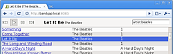
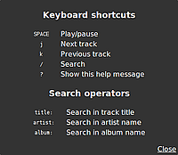

Zeya
Dieser Artikel wurde für die folgenden Ubuntu-Versionen getestet:
Ubuntu 14.04 Trusty Tahr
Zum Verständnis dieses Artikels sind folgende Seiten hilfreich:
 Zeya
Zeya  ist ein Streaming-Server für Musik, der ausschließlich HTML 5 verwendet – praktisch wird zur Wiedergabe auf dem Client weder ein Audio-Player noch Flash, Silverlight, Java oder ein anderes Browser-Plugin benötigt. Dafür aber zwangsläufig ein moderner Webbrowser, der HTML 5 umsetzen kann, beispielsweise:
ist ein Streaming-Server für Musik, der ausschließlich HTML 5 verwendet – praktisch wird zur Wiedergabe auf dem Client weder ein Audio-Player noch Flash, Silverlight, Java oder ein anderes Browser-Plugin benötigt. Dafür aber zwangsläufig ein moderner Webbrowser, der HTML 5 umsetzen kann, beispielsweise:
Programmiert ist Zeya in Python und JavaScript. Alternative Server sind im Artikel Musik verwalten zu finden.
Hinweis:
Die letzte/aktuellste Version von Zeya datiert auf September 2011.
Installation¶
 Zeya ist bis Ubuntu 15.04 in den offiziellen Paketquellen enthalten. Folgendes Paket muss installiert [1] werden:
Zeya ist bis Ubuntu 15.04 in den offiziellen Paketquellen enthalten. Folgendes Paket muss installiert [1] werden:
zeya (universe)
 mit apturl
mit apturl
Paketliste zum Kopieren:
sudo apt-get install zeya
sudo aptitude install zeya
Bei der Installation werden weitere Pakete wie mpg123 zur Dekodierung von MP3 (das bei Bedarf durch mpg321 ersetzt werden kann) sowie die Unterstützung für FLAC und MP4 zusätzlich installiert.
Verwendung¶
Server¶
Nun wechselt man in den Ordner mit den Musikdateien (z.B. ~/Musik) und startet das Programm [2]:
cd ~/Musik zeya
Der aktuelle Ordner wird rekursiv durchsucht und enthaltene Musikdateien zum Abspielen angeboten. Beendet wird das Programm mit der Tastenkombination Strg + C .
Im Musikordner wird die Datei zeya.db angelegt, die die gefundenen Titel enthält. Werden in diesem Ordner Dateien gelöscht oder hinzugefügt, während Zeya läuft, muss
Zeya beendet
zeya.db gelöscht und
Zeya neu gestartet werden
damit die Datenbank aktualisiert wird.
Client¶
 Im Webbrowser gibt man nun die Adresse des Servers ein:
http://<Server-IP>:8080/oderhttp://localhost:8080/(nur direkt auf dem Server selbst möglich)
Tastenkürzel¶
Zeya kann auch über die Tastatur bedient werden.

| Navigation | |
| Taste | Beschreibung |
| Wiedergabe/Pause | |
| J | nächster Titel |
| K | vorheriger Titel |
| ? | Kurzhilfe |
| Suche | |
| / | Suchen nach... |
title: | Titel |
artist: | Künstler |
album: | Album |
Konfiguration¶
Die Konfiguration findet über Optionen beim Programmstart statt. Die möglichen Optionen sind der Manpage oder folgender Tabelle zu entnehmen. Diese können beliebig miteinander kombiniert werden, aber es kann immer nur ein --backend=... verwendet werden.
| Programmparameter | |
| Zweck | Option |
Ort der Musikbibliothek (zählt als --backend) | --path=/Pfad/zum/Musikordner |
| Bibliothek von Rhythmbox einbinden | --backend=rhythmbox |
| M3U-Wiedergabeliste festlegen (auch PLS möglich) | --backend=playlist --path=/Pfad/zur/playlist.m3u |
| zu verwendende Port-Nummer (Standard: 8080) | --port=... |
| Bitrate (Standard: 64 kbps) | --bitrate=128 |
| nur lokalen Zugriff erlauben | --bind_address=127.0.0.1 |
| Passwort verwenden | --basic_auth_file=/Pfad/zur/.htpasswd |
Beispiel:
zeya --path=/Pfad/zum/Musikordner --bitrate=128 --bind_address=127.0.0.1 --port=9999
Auto-Start¶
Um Zeya als Dienst mit Upstart zu verwenden, kopiert man die Datei /etc/zeya.conf mit Root-Rechten [3] nach /etc/init/zeya.conf. Anschließend bearbeitet [4] man die kopierte Datei und passt die Optionen in der letzten Zeile den eigenen Wünschen an:
exec python /usr/bin/zeya --path=/Pfad/zur/Musik --port=8080
Nun muss die Upstart-Konfiguration aktualisiert werden:
sudo initctl reload-configuration
Die eigentliche Steuerung erfolgt mit der Befehl:
sudo initctl [start | stop] zeya
Problembehebung¶
Links¶
Zeya Cookbook
- ProgrammoptionenServe Up Your Music with Zeya
- Artikel Linux Journal, 06/2010Musik verwalten - Übersichtsartikel
- Erstellt mit Inyoka
-
 2004 – 2017 ubuntuusers.de • Einige Rechte vorbehalten
2004 – 2017 ubuntuusers.de • Einige Rechte vorbehalten
Lizenz • Kontakt • Datenschutz • Impressum • Serverstatus -
Serverhousing gespendet von